Projects I have researched, designed, or manufactured
↓ scroll
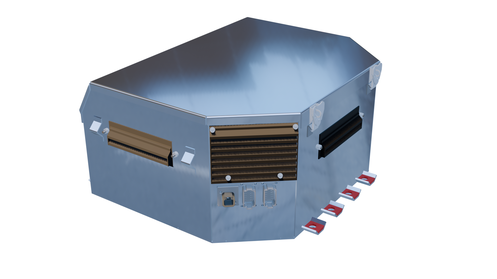
CR30 Battery Pack: Design and Manufacture
→
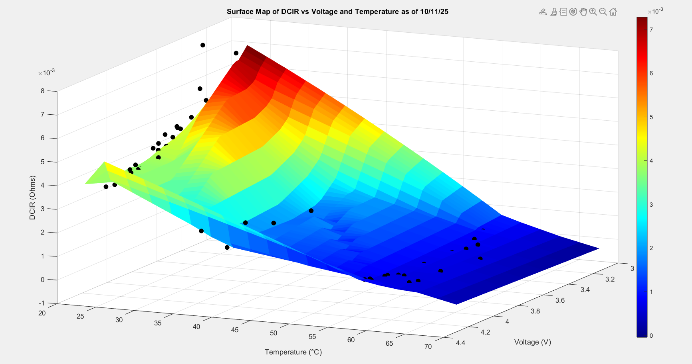
CR30 Battery Pack: Thermal Optimization
→
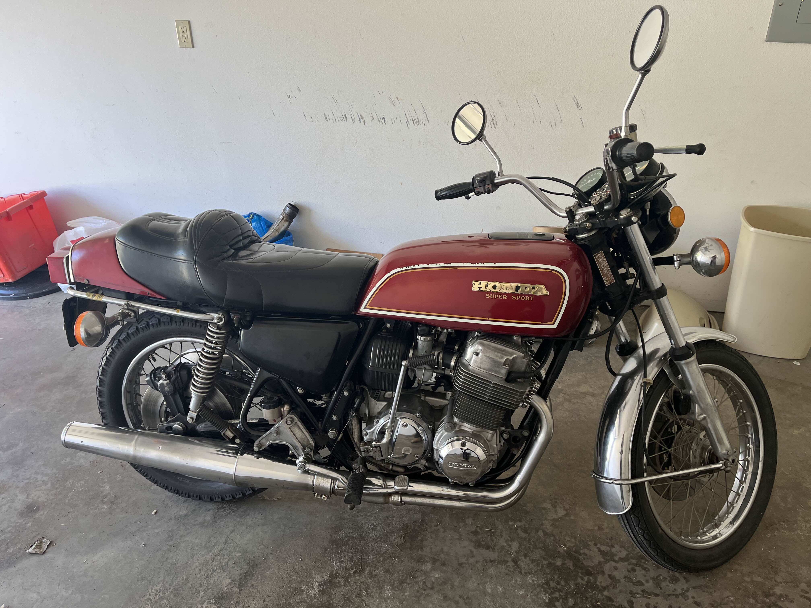
1976 Honda CB750F Restoration
→
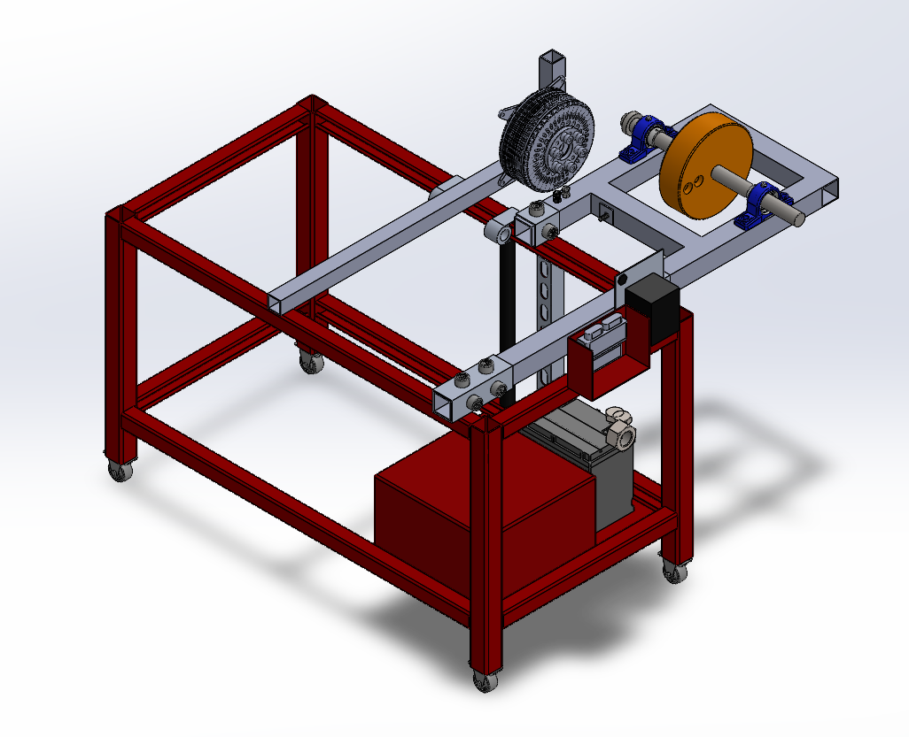
Dynamometer Cart + Motor Testing
→
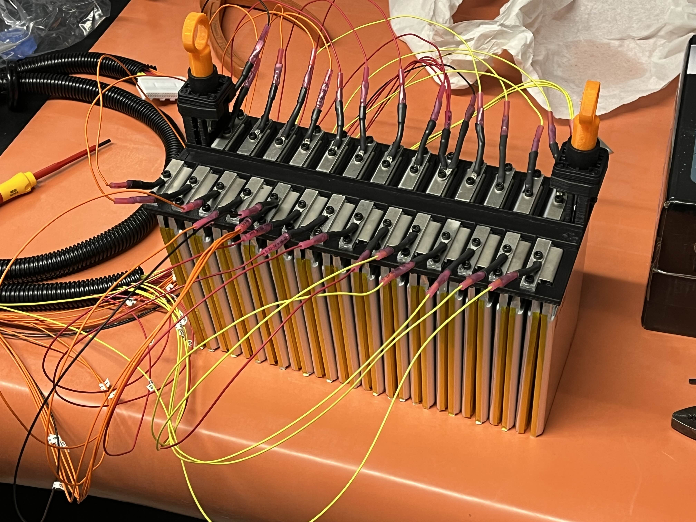
CR29 Battery Module: Manufacture
→
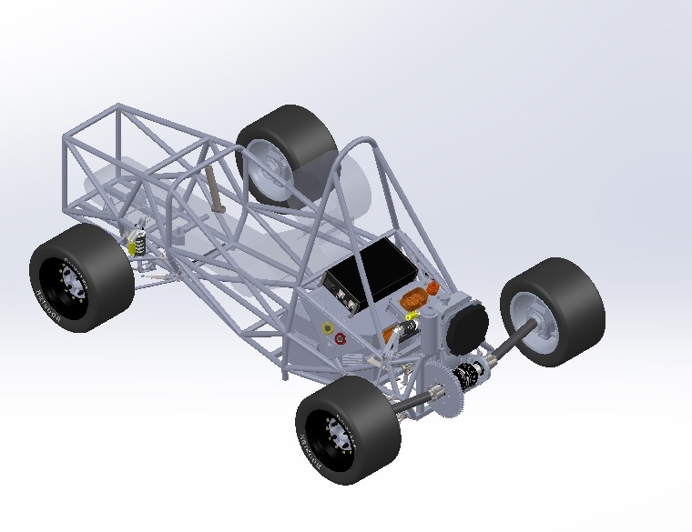
2 Week Tube Chassis
→
CR29 Accumulator: Manufacture
March 2025·ManufactureValidation·~6 min read
A finished 28s1p tractive battery module with BMS sense wires harnessed.
Building Cyclone Racing's first tractive system from scratch: the aluminum housing, five battery modules, and everything that went wrong along the way.
Specifications
Configuration: 28s1p per module
Cells: COSMX CA95B0D0HD
5 modules total
Context
CR29 was Cyclone Racing's first electric car. The accumulator, the main high-voltage battery pack, had to be built from scratch. Nobody on the team had done this before. This write-up covers the full manufacturing process: the aluminum housing and the five battery modules that go inside it.
What an Accumulator Is
The FSAE rules called the main high-voltage battery pack the accumulator. That terminology shifted to "tractive battery" in the 2026 ruleset, but for CR29 it was the accumulator. It isn't one big battery. It's a housing containing smaller sub-units called modules, wired in series to reach the total pack voltage. Each module is a self-contained group of cells. For CR29, each module holds 28 pouch cells wired in series with one cell per parallel group (28s1p). Five modules make up the full pack.
The Aluminum Housing
The housing is a welded aluminum enclosure that holds all five modules, the BMS, and the high-voltage wiring. The flat panels were water jet cut from aluminum sheet, which gave clean, accurate profiles without introducing heat distortion.
The original design called for the side walls to be bent to shape rather than cut as separate pieces and welded. Bending would have been faster and produced cleaner corners, but the bend tolerances weren't tight enough to be usable. The walls didn't sit where they needed to sit. Rather than redesign around the bending process, the bent sections were cut off and the walls were welded on as flat pieces. Both the exterior panels and the interior partitions.
That created a new problem. The exterior walls are 3.2mm thick and welded fine. The interior partitions are 2.3mm, the rules minimum. Welding a continuous seam into 2.3mm aluminum puts more heat into the part than it can absorb without moving. The walls warped. After welding, the interior cavity was tight enough in places that the modules wouldn't fit. The fix was a mallet, working the distorted spots outward until the modules fit. Functional, but out of spec.
A lot of time went into fitting each panel before tacking so the housing would match CAD. Even then, it wasn't perfect. For CR30, the plan is to add slots to the mating edges so panels self-locate when assembled. That cuts fitment time and removes the need for careful alignment before every tack.
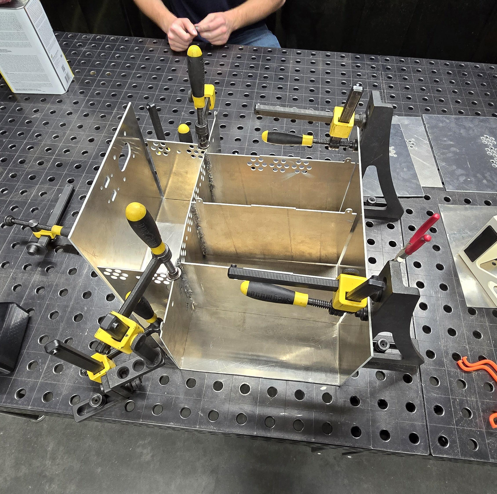
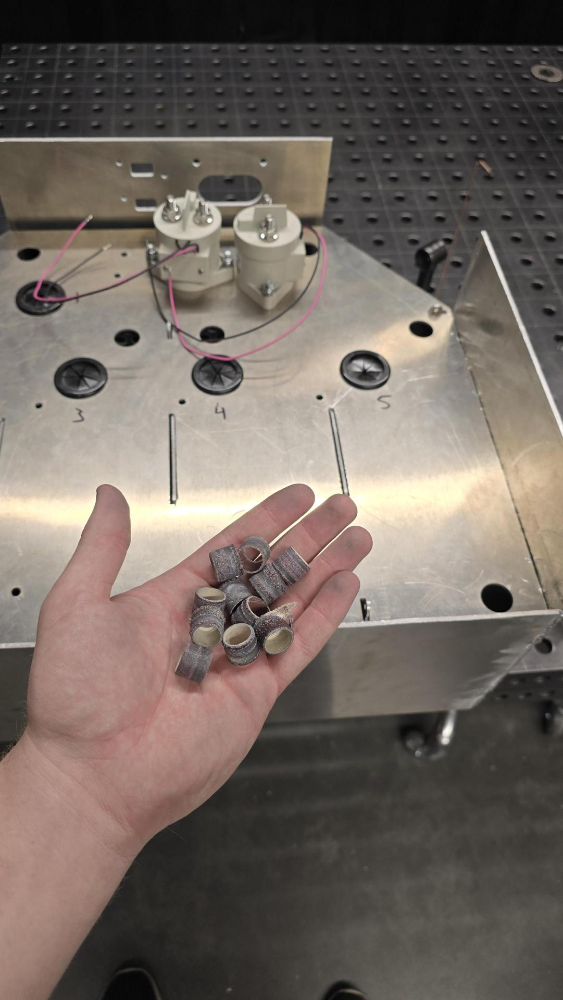
CR29 housing panels fixtured for welding (left), and the container near complete (right). Every panel needed external clamping to hold square before tacking.
Module Assembly
The 28 cells in each module get sorted into four types, A through D, based on tab length and orientation. The type determines where in the stack the cell goes. Getting the order wrong means a tab that doesn't reach its clamping plate, or one that's bent at the wrong angle.
Before touching a cell, the tab clamping plates had to be prepared. These are 3D-printed plates that clamp the cell tabs and bolt them together electrically. The innermost bolt positions are inaccessible once cells are stacked, so the design used press-fit nuts embedded in the plastic. In FDM prints, press-fit doesn't hold reliably, so each nut got bonded in with JB Weld and left to cure. The intent was for them to behave like heat-set inserts, locking the nut so the bolt has something solid to thread into.
With the plates ready, assembly went like this: drop the first D cell into the stack, lay a tab block over the tabs, fold the tabs up onto it, drop in the first A cell, fold its tab, add another tab block with a BMS sense wire ring, bolt through. Then repeat, alternating A and B cells through the stack. The final cell is a C type. After the last cell, main terminals get attached and the whole stack goes into polycarbonate baskets for structural support and isolation.
Total module build time ran about 5 hours a day over three days, roughly 3 hours per module including cell stacking, tab folding, bolting, and BMS sense wire harnessing. That doesn't count 4 hours sanding burrs off the tab blocks before assembly, or the time crimping fuses onto the BMS wires.
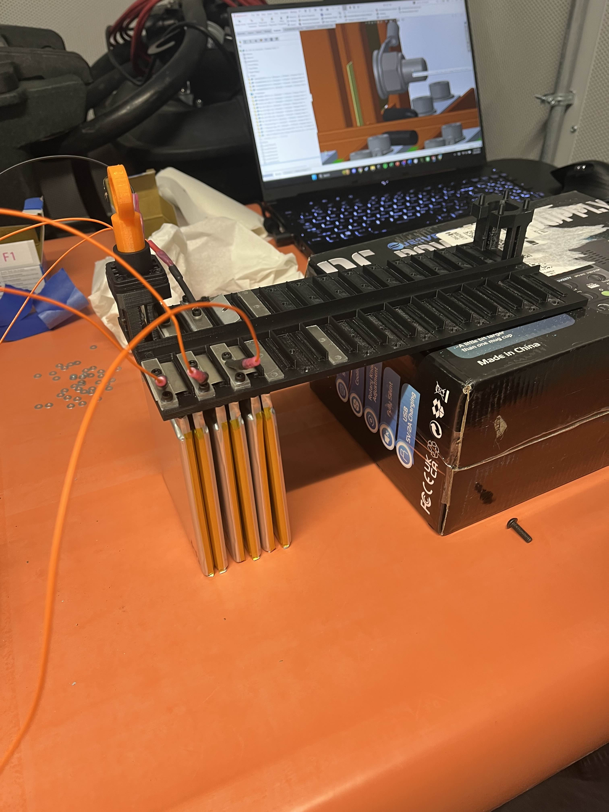
Module assembly in progress: cells, tab blocks, and clamping plates layered into the stack.
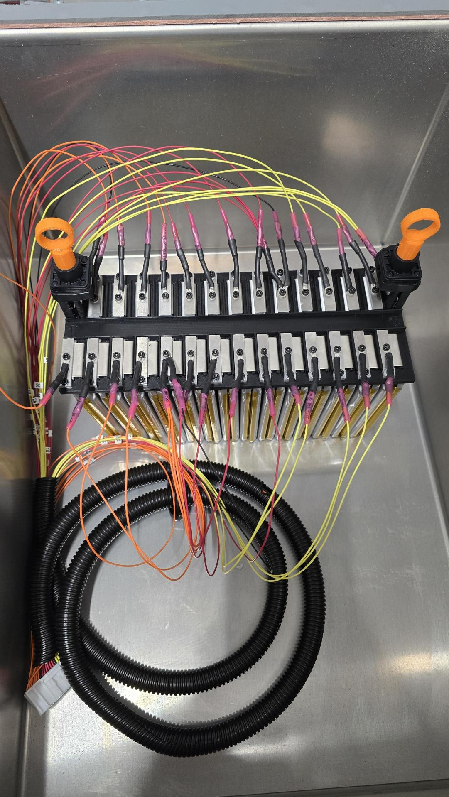
The first completed CR29 module after cell stacking, tab folding, and BMS sense harnessing.
What Didn't Work
The JB-welded nuts were the biggest problem. Because they weren't square in their pockets, some bolts cross-threaded on the way in. Once a bolt cross-threads into an epoxy-held nut, the nut breaks free. Now there's a loose nut inside a sealed module. Fixing it meant partially disassembling the stack mid-build. The bonded nuts also made disassembly difficult when modules needed to come apart for CR30.
Stack pressure was the second gap. Pouch cells need to be compressed during cycling to prevent swelling and dendrite growth. The module had compression plates, but the cell dimensions in CAD came from the datasheet, not actual measurements. Real cells ran about 0.7mm thinner than spec per cell. Across 28 cells, that's roughly 20mm of lost compression.
The terminal bolts were a safety concern. The pack terminals were accessible from below even with TPU plugs installed. Live conductors there are a problem for inspections and for anyone whose hand ends up near the bottom of a live pack.
Notes for CR30
The full list from this build: add self-jigging slots to the housing panels, redesign the nut pockets with tighter interference fits so they lock mechanically without JB Weld, measure actual cells before finalizing compression plate dimensions, fully enclose the terminal connections, reduce bolt count, and clean up harness routing. The accumulator worked well enough for testing. Building it showed where the next generation needs to be different.
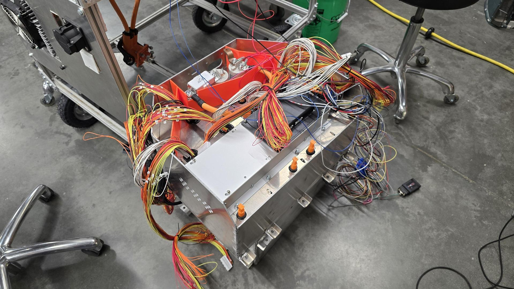
CR29 pack complete, penthouse wiring visible. The harness routing mess in this photo is what CR30's cleanup targeted.
Project Timeline
Early March 2025
Housing Fabrication
March 20, 2025
First Module Assembly
March 30, 2025
All Five Modules Complete
Aluminum panels were water jet cut and welded into the housing enclosure. The planned bending process was abandoned after tolerances proved too loose. Weld distortion in the 2.3mm interior walls required mallet correction before modules could fit. Self-jigging slots flagged as a CR30 improvement.
The first module came together over the course of a full day. Cross-threading from misaligned JB-welded nuts appeared early. Cell gap from real vs. spec dimensions was confirmed at ~0.7mm per cell. Exposed terminal connections were flagged as a safety concern. All issues were documented for CR30 design review.
All five modules were completed with wiring harnesses and polycarbonate baskets installed. The full accumulator was assembled and the pack was ready for subsequent system-level testing.
Dyno Cart Testing
April–June 2025·DesignManufactureValidation·~4 min read
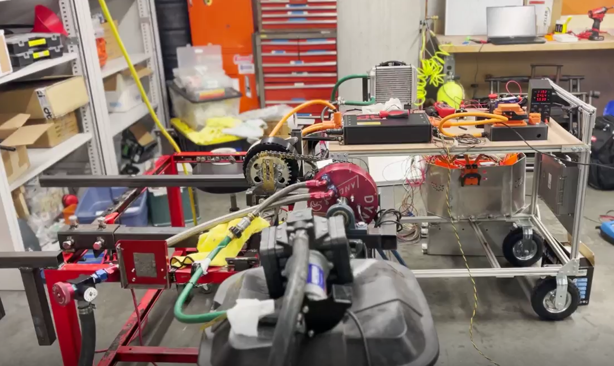
The "Porsche Ferrari" dyno cart, reconfigured from its Yamaha R6 origins to carry the Emrax 208 and the tractive system.
Adapting Cyclone Racing's legacy IC dyno cart to validate an Emrax 208 motor and DTI HV550 inverter before the team committed to going electric.
Why This Existed
Cyclone Racing was finishing its last season as an IC team while beginning the transition to electric. The Emrax 208 motor was on hand, but we had no chassis to put it in and no way to run it under load. Before abandoning a program we'd been dominant in, we needed to prove the electric powertrain worked. That meant spinning the motor with the full tractive system outside the car, which meant building somewhere to mount it.
The team had a dyno cart that had been around so long nobody knew when it was built. It had a Porsche sticker and a Ferrari sticker on the side, so we called it the Porsche Ferrari. It was configured for a Yamaha R6 engine, which made it useless as-is.
Reconfiguration
The original cart was built around the R6: IC mounting features, a gas tank, and IC wiring with no provision for GLV power or the HV interlocks needed to keep the tractive system live. The GLV battery cutting out would kill HV power, so that had to be managed carefully.
I designed the reconfiguration to be swappable rather than permanent. IC mounting features were removed and replaced with bolted equivalents so the cart could switch between IC and EV configurations. The GLV wiring was pulled off entirely and moved to a separate cart, making the harness swap simple depending on what you were testing.
Motor Mount
The Emrax 208 is a pancake-style motor with a bolt pattern that didn't match anything on the cart. I kept the mount simple: two lengths of square tube steel spanning the full width to handle motor torque, bolted at both ends, with a third piece at 90 degrees to capture three of the four bracket mounting holes. Nothing exotic, but rigid and functional.
The Water Brake
A water brake is a hydraulic absorption unit. Water enclosed in a housing acts like a pump, using fluid resistance to apply counter-torque against whatever is spinning it. The CR27 team had used one for a full-power test with the R6, so I assumed it would hold up for the electric motor.
In hindsight I should have run hand calculations first. The data sheets had been lost along with most institutional knowledge of the thing, and I'm not confident it could handle the loads the Emrax produces. It was sufficient for what we needed at the time, but future testing will use the 300 kW dynamometer the university has since installed, which gives real load control and accurate torque curves. The Porsche Ferrari has probably earned its retirement.
Testing
The no-load test was the first time the full tractive system ran: battery pack, Orion BMS, and DTI HV550 inverter all running together. The goal was to confirm everything communicated correctly and the BMS behaved as expected before putting real demand on it.
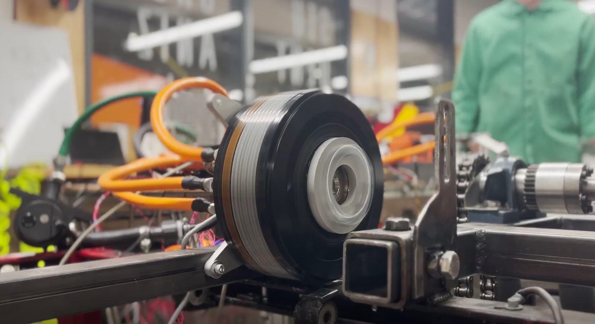
First full tractive-system spin-up: battery pack, Orion BMS, and DTI HV550 inverter running together for the first time.
The loaded test pushed higher power through the system with the water brake applying resistance. It surfaced an issue: the motor would stop randomly after about 30 seconds with no fault codes from the inverter or BMS. We worked through it, but it was a reminder that systems that look clean on paper have a way of surprising you the first time you run them.
The results weren't well documented. Something I'd do differently. What we confirmed was that the tractive system was functional and the team understood how to operate and troubleshoot it. That was the whole point before committing to an EV program.
What's Next
Future powertrain testing will move to the university's dynamometer. Beyond the water brake's load limits, driver testing gives more useful data than anything we can simulate on the cart. The custom hub motors in development will spend time on the dyno before they go near a car, but that's a job for the 300 kW unit, not the Porsche Ferrari.
Project Timeline
April 08, 2025
Milestone 1: Design Completed
April 15, 2025
Milestone 2: Manufacturing Completed
June 17, 2025
Milestone 3: Testing Validated
Completed the design, including CAD models for the dyno cart structure, water brake, mounting solutions, and all powertrain components.
Finished manufacturing the dyno cart.
Validated the dyno cart through the teams first loaded electric powertrain test.
1976 Honda CB750F Restoration
Summer 2025·DiagnosisRebuildFabrication·~5 min read
The 1976 Honda CB750F.
Reviving a 50-year-old SOHC four: carburetors, electrics, timing, and the start of a cafe racer build.
Why This Bike
I came across a cafe racer build by Milezero Racer based on a CB750F Clubsport and immediately wanted one. Beyond the aesthetics, this was a project I needed. I'd learned about carbureted engines in theory but never had my hands on one. Carburetors are dated technology, but the physics behind them are fascinating. There's also something satisfying about reviving a machine that hadn't turned over in years.
There's a practical reason too. Working through a real mechanical system, diagnosing problems, chasing faults, fixing things that fight back, builds intuition you can't get from a textbook. The CB750 has been one of the better teachers I've had.
Initial Assessment
The bike wasn't running when I got it but wasn't a disaster either. Tires were dry rotted, so I built a makeshift center stand from scrap wood and swapped them before anything else.
A makeshift center stand built from scrap wood to swap the dry-rotted tires.
Then I ran through the basics: spark, compression, air, fuel.
Compression came in at 130–135 psi across all four cylinders. The SOHC forums put healthy range at 150–180 psi, with 120 being the low end and below 100 needing work. Consistent across cylinders, which is a good sign, but on the low side. The air filter was torn and got replaced. The carbs were the main concern: float pins seized from corrosion, so a simple clean wasn't going to work.
Electrical System
The electrics needed work. Both lights had heavy parasitic draw, the high beams killed power to the whole bike, and the turn signals were dead. The previous owner installed a lithium battery whose BMS couldn't handle the bike's demands, so I replaced it with an AGM while sorting everything else.
Tracing the harness turned up loose and corroded bullet connectors throughout. I cleaned or replaced the bad ones and ran continuity checks to confirm. Spark was weak but the coils tested fine. The coil boots had resistance well above spec at the plug interface, so those and the plugs got replaced.
For lighting I built a custom headlight from a Suzuki GS850 housing fitted with high-output LEDs and swapped the tail light. Before the swap, switching lights on caused nearly half a volt of drop. After, the turn signals worked, draw was negligible, and the high beam issue was gone.
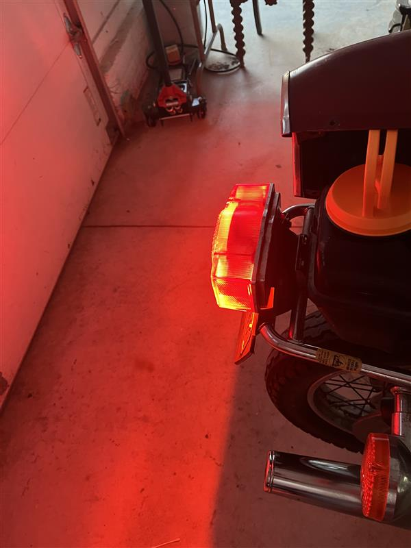
Custom headlight built from a GS850 housing with high-output LEDs (left), and the swapped LED tail light (right).
Carburetor Swap
The original carbs were too corroded to rebuild. I sourced a donor bike and stripped a set of Keihin 7A carbs, roughly equivalent in jetting to the originals. After cleaning, setting float levels, and syncing all four, I installed them.
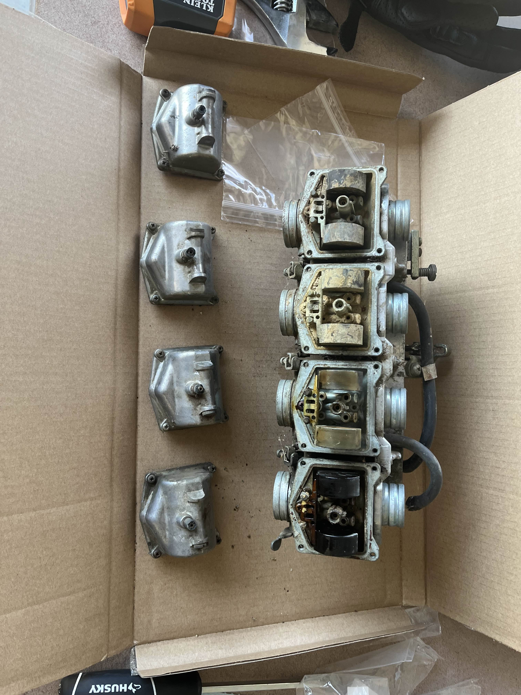
Keihin 7A carbs pulled from a donor bike, cleaned and synced before install.
They got the bike running but have been an ongoing problem. The carbs run rich, clog regularly, and lose their tune. I've retuned them six times and done a full rebuild with float level reset and jet cleaning four times. Plugs have fouled repeatedly. Sorting the carbs is the top priority.
Timing
With spark and carbs sorted the bike started, but only on three cylinders and would lug to a stop after a few minutes. I ran the static timing procedure from the SOHC forums: 12V test light on the points, engine rotated by hand with TDC/BDC confirmed by the markings and a finger in the plug hole. Timing was retarded on cylinders 2 and 3. After adjusting, all four fired cleanly. I skipped dynamic timing since the bike ran well after the static adjustment. Something to verify down the road.
First Miles and What Still Needs Work
The first 100-mile ride went well enough to call it a success, but the remaining issues were hard to ignore. Fuel economy is poor from the rich carbs, and I have to run the petcock on reserve for adequate flow. The clutch is notchy and needs a rebuild. The front brakes are unhappy. The left caliper has a slow seep that leaves a film on the rotor before each ride. It hasn't saturated the pad yet, which I haven't fully explained.
What's Next
Mechanical reliability first: clutch rebuild, brake overhaul, and sorting the carbs. After that, the cafe build starts. I want to fabricate a custom seat in carbon fiber nylon to cut weight and clean up the tail. The tank is getting a clear coat to preserve the steel and some of the patina. The mirrors vibrate at speed, so I'm planning a lower-profile replacement with better damping.
Project Timeline
July 4, 2025
Milestone 1: Diagnosis
July 19, 2025
Milestone 2: Carb Swap & Electrical Overhaul
September 1, 2025
Milestone 3: First Ride
Full inspection: compression at 130–135 psi, dry rotted tires, seized carb floats, corroded bullet connectors, weak spark from failed coil boots, parasitic draw from headlight and tail light.
Swapped in Keihin 7A carbs from donor bike, rebuilt and synced. Replaced coil boots and plugs. Traced and repaired wiring harness. Built custom headlight from GS850 housing with LEDs. Swapped tail light. Replaced lithium battery with AGM. Set static timing on cylinders 2 and 3.
100-mile ride completed. Bike runs on all four cylinders. Remaining issues: rich-running carbs, front brake seep, clutch feel. Cafe racer modifications planned.
Additional Photos
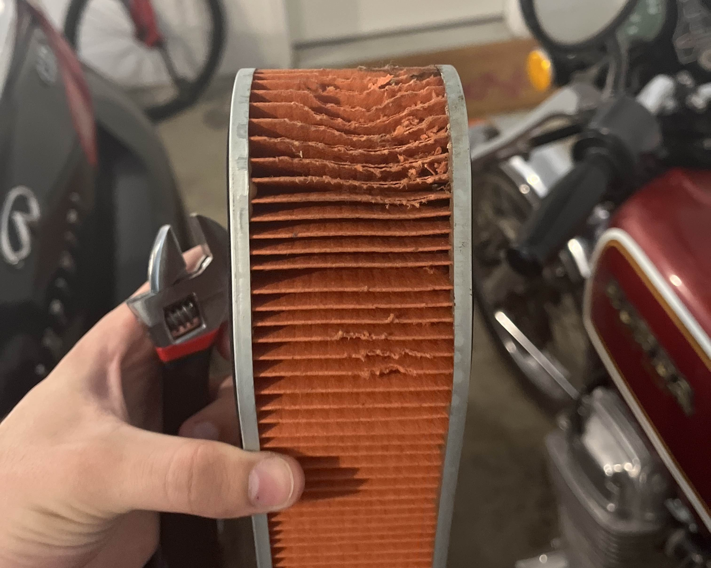
2 Week Tube Chassis
March–April 2025·ResearchDesignValidation·~4 min read
CR25-C, the tube-frame replacement designed over spring break to carry CR29's existing drivetrain and suspension.
CR29's carbon chassis failed at demolding. Over spring break, five of us designed a replacement tube frame from scratch in two weeks. It never got built, but it was worth doing.
How It Started
CR29 was designed around a carbon monocoque chassis. To speed up manufacturing, we built a welded steel mold instead of the usual fiberglass tooling. Steel is harder to seal, and during cure the vacuum bag lost pressure. Without vacuum, the laminate didn't consolidate. When the chassis was demolded, it was obvious. The surface looked crispy, layers frayed at the edges. Press anywhere and it was soft, crunching because the fibers had no matrix. There was no repairing it. Total loss.
That left us with a competition season, a complete drivetrain and suspension package, and no chassis. Over spring break, five of us decided to salvage it.
The Sprint
No formal assignments. We built a burndown list of everything the chassis needed, put it in front of everyone, and people grabbed tasks. The goal was to divide subsystems so nobody blocked anyone else.
The design wasn't starting from nothing. CR25 was the 25th car and one of the strongest tube frames the program had built. Its geometry was the reference point. The objective for CR25-C was to match CR29's critical dimensions: driver position, overall envelope, and the mounting locations for motor, wings, and suspension pickups. Those were optimized for CR29, and changing them would mean revisiting work already done well. The tube frame was a workaround, not a redesign.
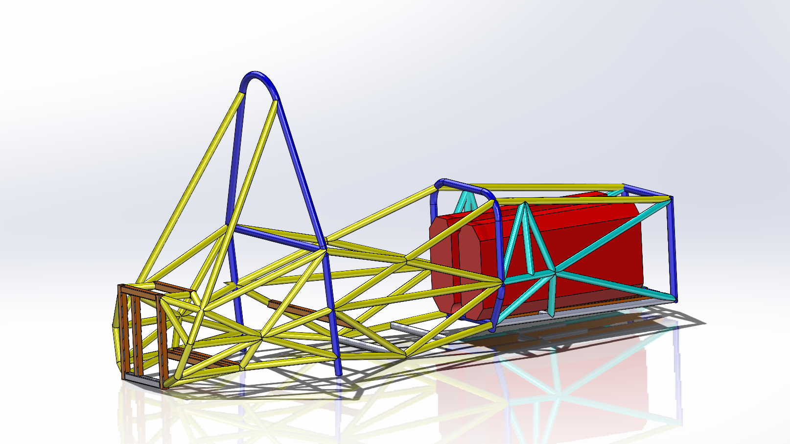
The bare CR25-C tube frame, before any subsystems were mounted.
What I Worked On
I took cooling because it was my original design for CR29. The tube frame changed packaging constraints, not the system, so it made sense to adapt it myself. The firewall went with it. FSAE rules are specific about what has to be sealed and how, and getting it wrong is a tech inspection failure. I'd worked on both the firewall and seat for CR29 as well.
Suspension was the bigger task. A tube frame is heavier than a monocoque, so the spring rates from CR29 wouldn't work. I updated spring selection for the added mass, re-ran the blade simulations to validate geometry, laid out hardpoints, and carried over the A-arms, ARB, and struts from the original design. The goal was to touch as little as possible while making what needed to change correct.
At the end of the design phase, the team submitted an SES (Structural Equivalency Spreadsheet). It's an FSAE document that proves a chassis meets the structural requirements. It's mandatory for competition; no SES approval, no tech sign-off.
The Vote
With the design done and SES submitted, the team had to decide whether to build it. That came down to funding and time. The vote went to the team leads. Two tied votes. The meeting was a war. The decision came down to bringing CR28, the last IC car, to competition instead. Optimizing a known car was a safer bet than manufacturing and debugging a new chassis in the time remaining.
CR28 went to Michigan and finished 5th. That's a hard result to argue with.
Looking Back
The two weeks were worth it. Not because the chassis got built, but because of what working that way felt like. A small group, a clear deadline, a list of tasks, no bureaucracy. Everyone just worked. It's the closest thing to a startup environment I've been in, and it confirmed that's the kind of team I want to be part of. The lesson that came with it is harder: you can do everything right and still lose the vote. A good solution to a bad situation doesn't guarantee it gets used. Sometimes the answer is correct and it still doesn't happen.
Project Timeline
March 17, 2025
Design Begins
March 31, 2025
SES Submitted
April 7, 2025
Project Terminated
Using CR25 as the geometric reference and CR29's critical mounting locations as constraints, CR25-C was modeled over spring break. Subsystems were divided across the group: suspension, cooling, firewall, seat, and chassis structure, with each person working in parallel to avoid bottlenecks.
The Structural Equivalency Spreadsheet was completed and submitted, formally demonstrating that CR25-C met FSAE's structural requirements. SES approval is required before a car can pass technical inspection at competition.
After two tied votes, the team leads decided to bring CR28 to competition rather than manufacture CR25-C. CR28 finished 5th at Michigan. The team's final IC season.
CR30 Battery Pack: Thermal Optimization for Endurance
October 2025·ResearchDesignTestingLead·~5 min read
CR30 battery pack render.
How DCIR testing on Cyclone Racing's CR30 cells replaced a liquid cooling system with ten fans, and why the spec sheet was useless.
The Problem with the Spec Sheet
The CR30 battery is a 5-module lithium-ion pack that needs to sustain current bursts up to 200A through FSAE endurance events. Heat rejection is critical, but when I went to calculate how much cooling the pack needed, I ran into a wall.
The cell spec sheet listed DCIR as either 1.5 mΩ or 5 mΩ. Two values with no graph, no conditions, no context. Depending on which you used, the thermal math either showed the pack overheating by end of endurance or barely needing cooling at all. Assuming worst case, I started designing a liquid cooling system: U-shaped shims contacting cell faces, a cooling plate, thermal padding, quick disconnects, and a pump loop mounted to the pack.
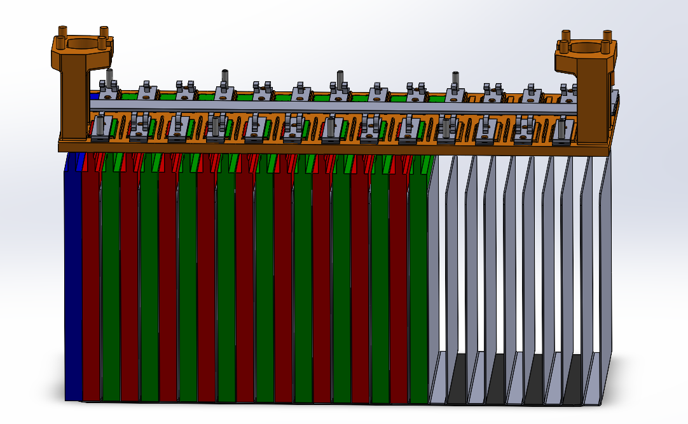
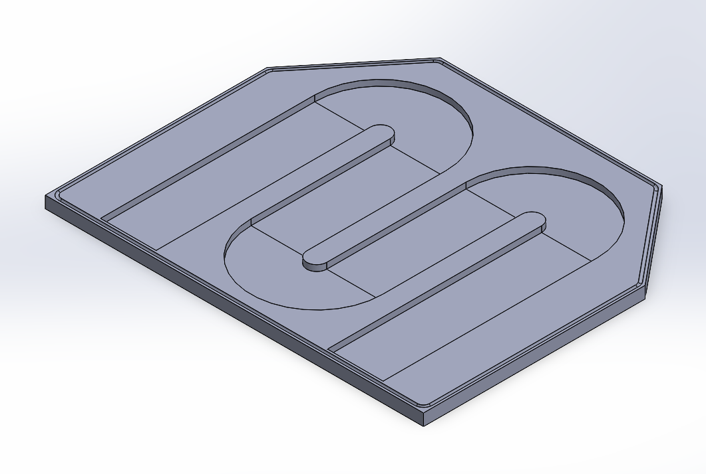
The abandoned liquid cooling design: U-shaped shims contacting the cell faces (left) and the dedicated cooling plate (right).
The more I looked at it, the worse it felt. The design added weight and complexity, cooling effectiveness would be marginal, and reliability of a fluid loop on a racecar was a real concern. I was building a solution to a problem I hadn't confirmed existed. What I needed was to characterize the cells under real conditions instead of trusting a spec sheet not written for racing.
Building the Test Rig
I identified four variables that affect DCIR: stack pressure, temperature, C-rate, and state-of-charge. The goal was to isolate each one and understand how much it mattered, all for under $100.
Load Bank: Four 0.1 Ω heatsink resistors in a 2s2p configuration for uniform heating, validated at 0.131 Ω via 4-wire Kelvin sensing
C-Rate Tester: Carbon pile rheostat for variable current draw
Pressure Fixture: Machined steel plates with springs, adjustable from 0–8 psi
Current Sensing: Borrowed SSA-250 and current clamp from the PRISM Solar Car team
Not glamorous, but it covered the parameters I needed to test.
Testing Each Variable
Face Pressure: Ruled Out
Stack pressure was first. Using the spring fixture, I ran pulse tests at 0, 2, 5, and 8 psi across cell faces. DCIR barely moved. The car sees a low cycle count over its lifetime, so pressure-driven SOH degradation isn't a design concern. I deprioritized it and moved on.
Spring-loaded fixture for adjustable cell face pressure across the 0–8 psi range.
C-Rate: Secondary Effect
C-rate tests via the carbon pile rheostat showed DCIR trending downward with increasing current draw, likely from local temperature increases due to ohmic heating. The effect was real but small, so I didn't incorporate it into the thermal simulations.
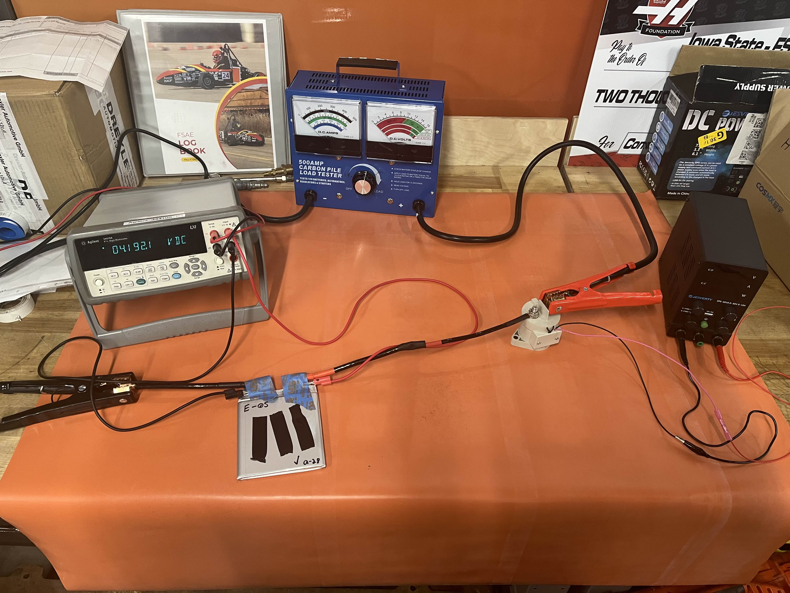
Carbon pile rheostat rig for sweeping C-rate against DCIR.
State-of-Charge: Repeatable and Strong
For SoC testing I ran 10-second discharge pulses to capture the ohmic voltage drop and 1RC transient, followed by 3-minute rests to track 2RC recovery. As SoC drops, Li⁺ concentration in the electrolyte decreases and charge transfer kinetics at the electrode surface become less favorable, both of which increase resistance. The results matched: a clear, repeatable DCIR increase at lower states of charge.
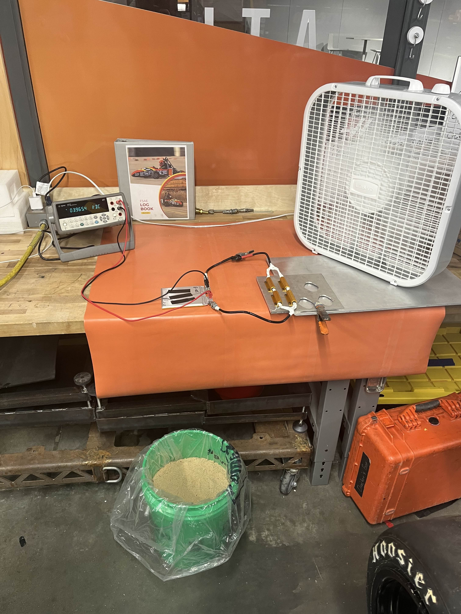
10-second discharge pulse protocol capturing ohmic drop and 1RC/2RC recovery.
Temperature: The One That Mattered
I didn't have access to the university temperature chamber, so I improvised with a foldable heat pad wrapped around isolated cells. Cell temperature was monitored with FLIR thermography and IR spot metering. I ran the same pulse protocol across 25–60°C, and this is where things got interesting.
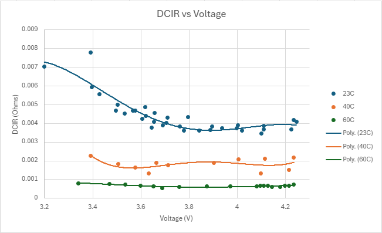
DCIR plotted against SoC across the temperature sweep, captured during the heat-pad test runs.
DCIR Mapping: The Spec Sheet Was Way Off
Temperature and SoC together dominated DCIR variance. When I plotted the full dataset, DCIR dropped as low as 0.7 mΩ at operating temperature, less than half the spec sheet's 1.5 mΩ minimum. The cells were running more efficiently than the datasheet implied.
I built a 3D surface in MATLAB mapping DCIR against temperature and SoC, then fit it to a third-order polynomial for the team's thermal simulation.
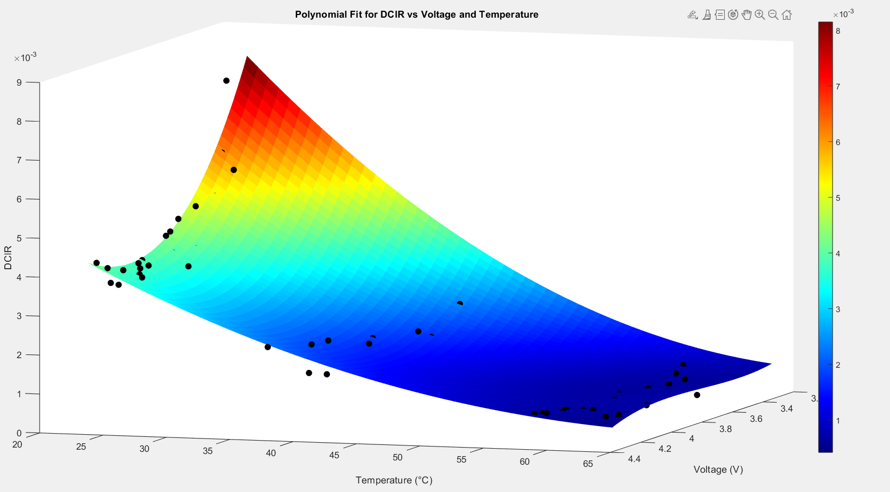
DCIR surface against temperature and SoC: raw dataset (left) and third-order polynomial fit (right).
Running the thermal model with real DCIR data and a 1.5x safety factor from RC recovery analysis, the pack's peak temperature stayed well below 60°C (the rules maximum) for the full endurance duration. The liquid cooling system wasn't just overkill. It was unnecessary.
Redesign
With passive heat mass confirmed sufficient, I stripped the liquid system: base plate, U-shims, thermal pads, pump, and radiator. In their place I added 10 fans: 5 always-on for penthouse electronics cooling, 5 BMS-relayed above the modules as backup for cell cooling. Whether or not the cell fans are active, airflow intakes over the cell tabs and exhausts through the penthouse vents. Simple, lightweight, and the BMS relay gives it a failsafe for anomalies like connection degradation.
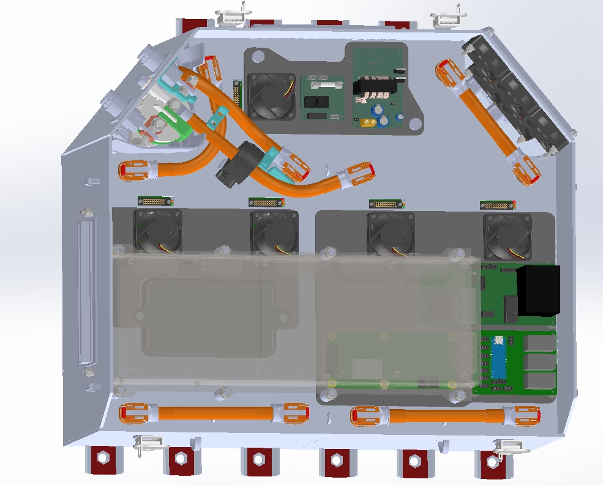
Final cooling architecture: ten BMS-relayed fans draw airflow across the tabs and exhaust through the penthouse vents.
Specific Heat: Freezer Calorimetry
No published specific heat data existed for these cells, so the team was using aluminum as a stand-in. I wanted to validate that before it fed into anything important. With styrofoam, thermocouples, and my freezer, I set up a calorimetry test: first on aluminum blocks to establish a calibration multiplier, then on the cell itself. Results were consistent across runs, averaging 0.954 J/g°C. Not aluminum, but close enough that the simulations weren't wildly off.
Takeaways
The biggest lesson is that spec sheets for cells like these are useless for thermal design. They're written for general consumers, not race applications. Characterizing the cells under real conditions changed the design direction, saved weight, and gave the team a thermal model based on real data instead of guesses. I'd like to revisit this with proper temperature chamber access to fill in the edges of the DCIR map and run higher C-rate tests I couldn't reach with the load bank.
Project Timeline
September 27, 2025
Milestone 1: Test Rig Design
October 4, 2025
Milestone 2: DCIR Characterization
October 18, 2025
Milestone 3: Thermal Model & Redesign
Configured $100 DCIR testing equipment with load bank, carbon pile rheostat, pressure fixture, and current sensing equipment. Established testing protocols for stack pressure, temperature, C-rate, and state-of-charge analysis.
Conducted systematic DCIR tests isolating mechanical (face pressure), electrical (C-rate), and thermal (temperature, SoC) variables. Generated 3D DCIR surface maps showing temperature and SoC as dominant factors. Determined liquid cooling unnecessary for race loads.
Fitted DCIR data to third-order polynomial for thermal simulation. Developed hybrid cooling architecture removing liquid systems in favor of 10 BMS-relayed brushless DC fans. Validated specific heat capacity at 0.954 J/g°C through custom calorimetry testing.
CR30 Battery Pack: Design and Manufacture
April 2026·DesignManufactureLead·~7 min read
The CR30 pack. Second iteration, first one to drive.
Powertrain lead on Cyclone Racing's second electric pack. What worked, what didn't, and what's to come.
Specifications
Configuration: 28s per module, 5 modules in series
Cells: COSMX CA95B0D0HD (carried from CR29)
Pack voltage: 600V nominal
Mass: ~140 lbs
Context
CR30 is my second tractive battery pack for Cyclone Racing and the team's first electric car to run under its own power. I was powertrain lead through manufacturing, responsible for the full pack build: modules, aluminum housing, HV integration, chassis fit-up, and BMB commissioning. I also drove the pack-level design changes off CR29: a redesigned module basket, self-jigging slots on the housing, and cantilever retention on the tab blocks.
Cells carry over from CR29: we didn't run them in competition and didn't have budget for new ones. The thermal architecture (ten fans, no liquid loop) sits in its own post: CR30 Battery Pack: Thermal Optimization for Endurance. I also manufactured the CR29 pack, covered in the CR29 Accumulator: Manufacture post. This post covers the mechanical, electrical, and structural build.
Module Baskets
Each basket is a printed PAHT-CF shell that holds 28 cells, isolates them from the housing, and keeps the stack rigid under load. CR29 used polycarbonate baskets. PAHT-CF was chosen for CR30 after testing it against other carbon-impregnated and non-carbon filaments for impact resistance.
Printing them was a month-long fight. PAHT-CF wants to warp off the bed and warps especially badly in Z. I started on a Bambu A1 and X1 Carbon, but the basket footprint was too large for either bed. I moved to a Voron next, which had a closed chamber but no dedicated heater, and ran prototypes through every combination of print pattern, bed temperature, and speed I had time for. Every one came out with too much deformation to use. I finally got temporary access to a Bambu H2D and iterated on the basket geometry itself; by the third revision, warping was in a range I could live with. A +1.25% Z-scale canceled the remaining shrinkage, and I had a basket I could print five of.
Even on the H2D, surface quality was rough. Every basket came out with burrs I wasn't comfortable pressing cells against, so I sanded all five by hand before assembly. A burr through a pouch cell turns the pack into a fire risk, not worth the time saved.
Surface quality off the H2D. Every basket came out with burrs like these before sanding.
The basket has one open face. A close-out plate bolts in and sandwiches the cells against the opposite wall. CAD called for about a millimeter of clearance. Real parts had none. Closing a basket around its cells takes real force (not instrumented, but not a one-person job), which technically applies a stack pressure I didn't design for. DCIR isn't sensitive to stack pressure on these cells (receipts in the thermal post), so it doesn't hurt performance.
Tab Plates and Tab Blocks
The tab plate is a PETG print that holds the 28 cell positions, the Amphenol maintenance posts, and the tab blocks. Cell tabs slot through the plate, fold between two tab blocks, and clamp together to minimize contact resistance across the joint. The whole assembly drops into the basket for structural protection.
On CR29 each tab block was bolted on both ends. For CR30 I sketched a cantilever redesign and pushed it through design review after the initial proposal had stress concentrators I wasn't comfortable with: one end slots into a PETG feature on the plate, the other bolts down. It halves the fastener count and removes the stress concentrators from the load path.
The tab blocks are aluminum: the clamp needed to be light, stiff, and conductive enough to double as a thermal path off the tabs.
The bolts thread into aluminum nuts held in pockets in the PETG. On CR29 those pockets had clearance, so the nuts couldn't be held square: if one shifted as a bolt seated, the bolt rounded it. For CR30 I moved to an interference fit to lock the nuts in place. I test-printed a range of interferences and 0.05 mm pressed in cleanly without splitting the PETG. The CR30 nuts happened to be a slightly rounder spec than CR29's, and even with the interference holding them, seating the bolts with a tool deformed the pockets and took my preload with them. I got everything tight, but couldn't crank harder without rounding the pockets further. Contact resistance across those joints is unvalidated.
Ultrasonic or laser welding the cell tabs directly on CR31 deletes this whole stack: no tab blocks, no nut pockets, no fastener preload to worry about. Sponsor search is ongoing.
BMBs
Each module has a battery management board (BMB) on top, interfacing with the cell tabs through pogo pins. I ordered the bare PCBs from JLC, assembled the components, and led commissioning. Several issues surfaced and cost us weeks to work through.
Seven BMBs assembled from bare JLC blanks: five for the modules, two held back as spares.
The biggest issue was stiffness. The BMB was mounted on both ends but unsupported in the middle, and the pogo pins push up against the tab blocks with real force. The board flexed under that load, the center pogo pins lost contact with the cells, and sense signals dropped. A vertical retention stack for the cell sense harness already existed in the design, but its plastic insulation was borderline sketchy and I wanted to tighten it up anyway. While redesigning it I realized the same part could do double duty as a load path across the central top face of the BMB. The new stack is a single assembly (steel rod, plastic insulator, stiffener) that clips in, pushes the BMB flat against the tab blocks, and restores contact on the center pogo pins. No board redesign needed.
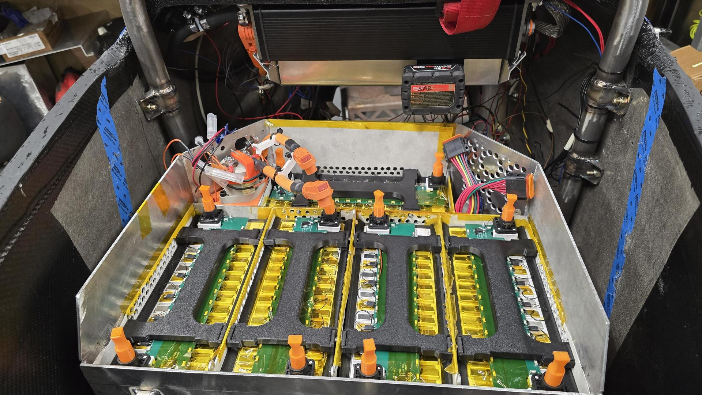
The redesigned retention stack: steel rod, plastic insulator, and stiffener as one assembly, seating the BMB flat and restoring contact on the center pogo pins.
A few smaller issues also cost us time:
Harness termination: The sense harness routed cell 12, cell 13-, and cell 13 as three separate terminations. In a series stack cell 12's positive tap is the same node as cell 13's negative tap, so those two sense wires need to share a termination. Because they didn't, the BMS read ten of the cells as missing until I rewired the harness.
Missing trace: One trace was absent on the production boards. There wasn't time to re-order the PCBs, so every board currently carries a jumper wire where the trace should have been.
Thermistor routing: The thermistor traces share a common plane, so a wire termination brushing a cell during installation can blow a trace. It happened twice before I started covering the pins with Kapton tape while mounting the rest of the board, then pulling the tape off once everything was secured. The board that blew had all its components swapped onto one of the spare blanks I'd ordered.
Connector: The chosen sense connector isn't robust to alignment error. Slight mis-mating arcs the pins and takes out fuses. Not fixable in this revision.
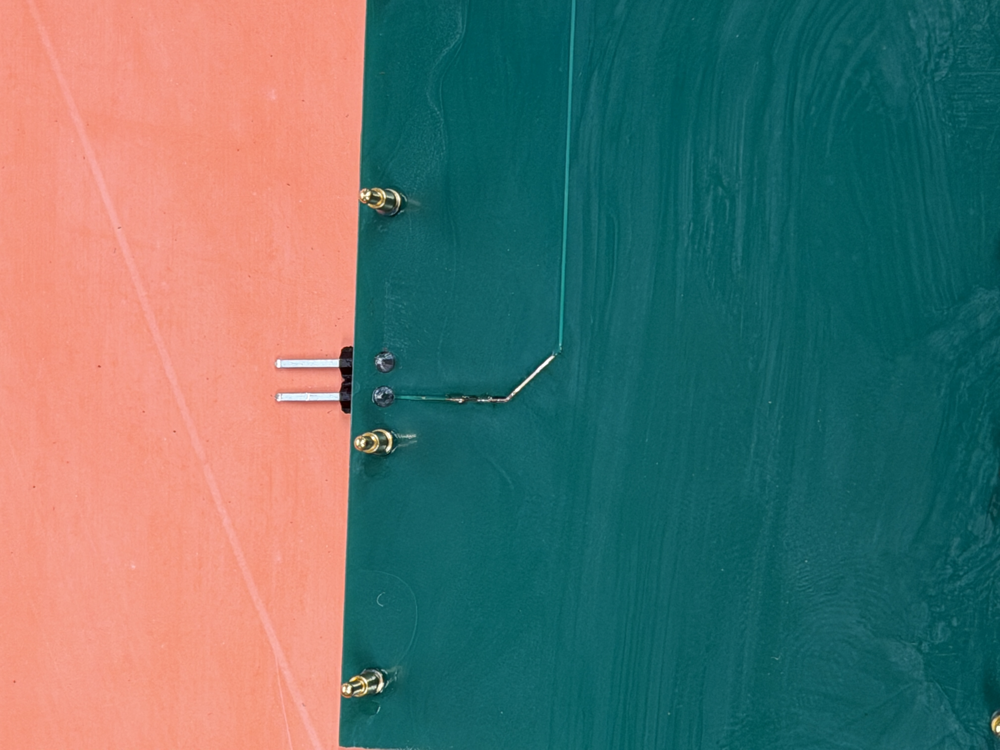
A completed module with its BMB seated (left), and the blown thermistor trace on the removed board up close (right). After this one, every install got Kapton tape over the pins until the board was secured.
These boards were supposed to make BMS harnessing cleaner than CR29's hand-terminated wiring. In the current state they work after rescue, and they're the single biggest CR31 rework item.
One oversight I caught late: the baskets had no lifting provision. When I needed to pull a module for service, there was no clean way to do it. I designed a lifting tool in about twenty minutes that drops into the same holes as the vertical retention stack, so the retention and the lift point share the same interface.
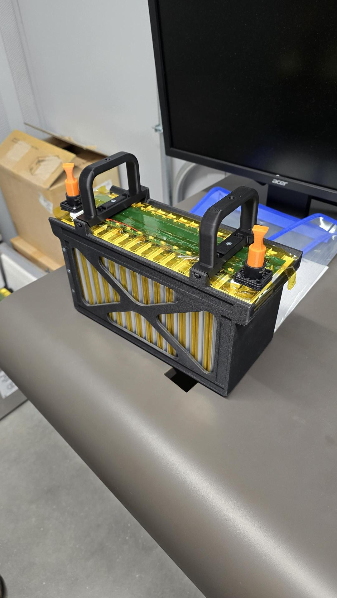
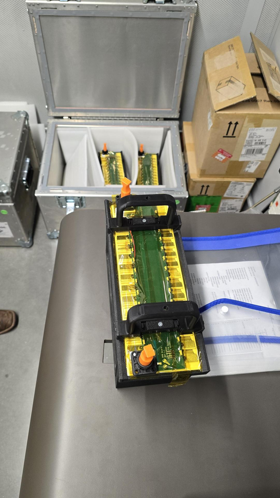
The lifting tool, built in about twenty minutes. Interfaces with the basket through the same holes the retention stack uses.
The Aluminum Housing
The housing is a welded aluminum enclosure that holds all five modules, the BMS, and the HV distribution. On CR29 the panel edges were flat, which meant every seam needed external clamps to hold panels square during weld-up. The walls warped anyway. For CR30 I cut slots into the internal walls and matching tabs along the external walls so the panels self-jig: each external tab drops into its slot, flush on the inside, no clamps. It worked phenomenally on every seam where I added it.
Waterjet aluminum panels with slot and tab features cut in (left), and the same panels dropped into self-jigged assembly (right). No external clamps needed on any seam where the feature was present.
Isometric view of the self-jigged container (left), and the same jig holding panels square for tack welds (right).
I missed the corner pieces. After welding wrapped up, I looked at the pack from inside and caught one corner visibly bent inward. It compressed the HV distribution region enough that the original corner plan no longer fit, triggering the redesign in the next section.
HV Distribution
CR29 ran a single beefy Amphenol connector in one corner of the pack with Coroflex HV cable handling all module-to-module routing. CR30 started from the same pattern. Midway through design, more senior members of the team proposed replacing it with a printed sleeve in that same corner (the "Power Prism") holding the contactors, the main fuse, and properly-sized copper busbars. Better packaging, fewer long HV runs. It became the new plan.
The busbar sizing that made the sleeve viable came from a conductor recalculation: the cross-sections we'd been pulling from ampacity tables were too conservative for a pack that sees peak current for seconds at a time with ambient convection. Re-deriving them from ρ·L/A with endurance-duration heat rejection dropped the copper significantly. I ran a material comparison study for the busbars and contributed supporting calcs.
After my missed corner slots warped the housing inward, the corner volume shrank below what the original sleeve fit into. I coordinated the sleeve redesign with newer members of the team to fit the reduced volume.
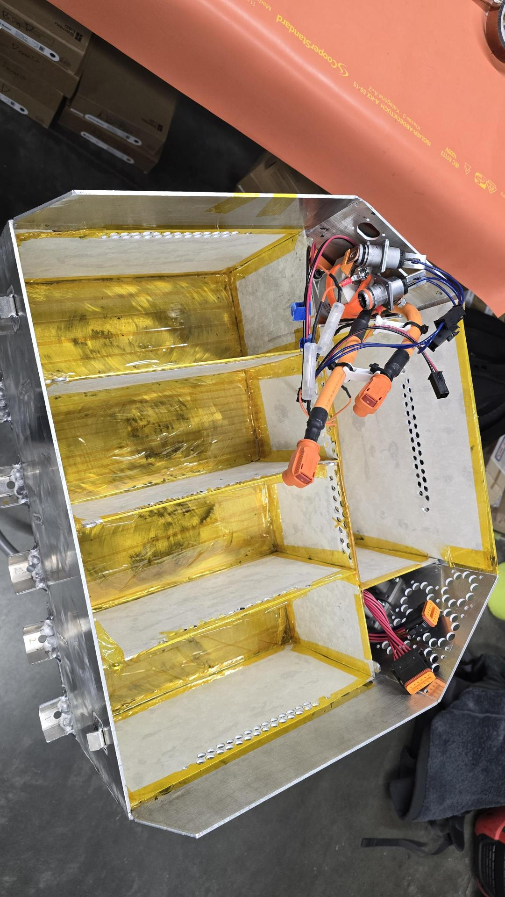
The Power Prism sleeve installed in the corner of the pack, holding the contactors, the main fuse, and the busbar routing.
Open item for CR31: the main contactors currently terminate toward the center of the pack rather than at the adjacent module poles right next to them, even though electrically those points are the same. Moving termination to the corner replaces most of the wire runs with busbars, frees up space in the center of the pack, reduces the risk of mis-plugging the connectors, and drops a small amount of weight from shorter runs.
Chassis Mounts
The pack mounts to the chassis through ten bolted mounts: four at the rear and six at the front, all bolted through pre-preg inserts (pucks) laid up into the monocoque before cure.
Pre-preg insert pucks laid into the CR30 monocoque before cure, shown in two angles. The front pucks came out proud of the surrounding surface, driving the spacer fix below.Shims sizing the pack-to-chassis mount tabs during dimensional fit-up.
The four rear pucks came out flush and those mounts bolted on without drama. The six front pucks came out proud of the surrounding surface, so the front mounts sat higher than the pack's corresponding mounting points. The pack itself was already positioned and couldn't move, so I lowered each front mount until its bottom sat flush with the pack, added aluminum block spacers sized to bridge each gap, and drilled the bolt holes using the pack and chassis together as the fixture.
The SES (Structural Equivalency Spreadsheet) we submit to FSAE requires a minimum of ten mounts for the geometry we used, and the shifted front mounts would have failed strength as drilled. The spacers were machined, welded to the bottom of each mount, and ground flush. I specced them in SES to confirm the revised geometry cleared the strength requirement. Not elegant. It cleared.
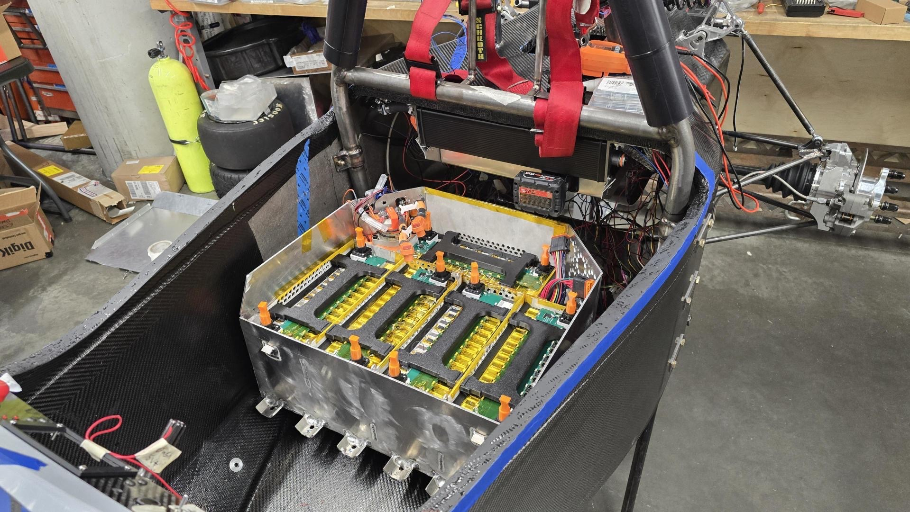
The CR30 pack in the chassis for the first time, after the drill-and-spacer fit-up.
CR31 moves to post-cure bonded inserts. The biggest reason isn't side-to-side placement, it's surface finish: bonded inserts come out flush and flat, so a mount sits where it needs to without spacers or last-minute geometry tweaks to pass SES.
First Drive
First drive was scheduled for March 1. We hit it on April 26. The path there ran through roughly six revisions of the electrical subsystem boards (SSI, pre-charge, shutdown, HVI) before they passed bench testing, and even the passing revisions didn't clear car-level tests on the first try. One version couldn't carry the full shutdown loop. Another used relays with too much coil resistance, dropping the drive voltage below what the contactors needed to close reliably. The wiring harness couldn't be finalized until those boards were settled, so each iteration shifted the schedule downstream.
On top of the board schedule, an incident during work inside the pack had an allen key touch exposed pins on a BMB connector, arc, and blow eight individual cell fuses on the board. I pulled the board, replaced the fuses, and reset for the next attempt.
The night before the drive, the wheels spun in reverse on a stand. I worked it at 1 a.m. convinced it was a polarity issue and went home. The next morning at 7 a.m., another team member found the actual cause: a software flag in the inverter config that flipped motor direction. One checkbox, fifteen seconds to fix.
The first time I got to clear the car as ready to drive.
We didn't get away clean. Closing the contactors for the first time threw an Orion BMS fault. The BMS was reporting an open relay that didn't actually exist on the car: I'd left a config setting enabled during commissioning that told it to expect one. Cleared with a config change.
Then the inverter started cutting power on a >20% disagreement between the two accelerator pedal position sensor (APPS) potentiometers. We isolated each pot in turn to figure out whether the discrepancy was real or a sync-rate issue between how quickly the two channels updated.
The inverter kept tripping faults that didn't have a real source we could trace. Without the mainboard from the electrical sub, we had no live or logged telemetry to read the fault history off the bus. We worked around it by dropping the fault reset time from 5 s to 1 s, which let us keep driving through the spurious trips. Pragmatic, not the right fix. Definitely going to be reviewed before the next drive.
A small group hands-on with the inverter while the rest of the team watched.Final acceleration of the day, just before the voltage sag threw a low-SoC fault.
With the reset workaround in place, we got real laps. The car drove at a 40 kW cap most of the day, and the pack swept from 3.46 V down to 3.29 V per cell with no battery faults. The run ended on a low-SoC trip, and the reason it ended early traces back to module assembly. We dropped a cell during build and swapped in a replacement without checking its SoC. By end of day that one cell had hit 3.296 V while the rest of the pack was still at 3.56 V...
Rain rolled in as we packed up. The water-tight grommets weren't all sealed yet, so the day was ending either way.
Notes for CR31
The punchlist this season earned:
Welded cell tabs: Deletes the tab block and nut pocket stack entirely.
Self-jigging slots on every wall interface: Including the corners.
Post-cure bonded chassis inserts: Flush, flat, no spacer workarounds.
HV termination at the corner: Short busbars to interlock connectors on adjacent modules.
Possible move to a composite housing: Pending materials analysis. Aluminum is heavy for the job it's doing here.
Melasta pouches if budget allows: Higher energy density lets us shrink the pack and stop being overkill at 600V.
SoC-match replacement cells: Any cell swapped during module build needs its SoC matched to the rest before insertion. CR30 didn't, and one mismatched cell governed our first-drive run length.
Prototype more: Roughly 70% of CR30 parts had minor issues that a single 3D print or foam mockup would have caught in the design phase.
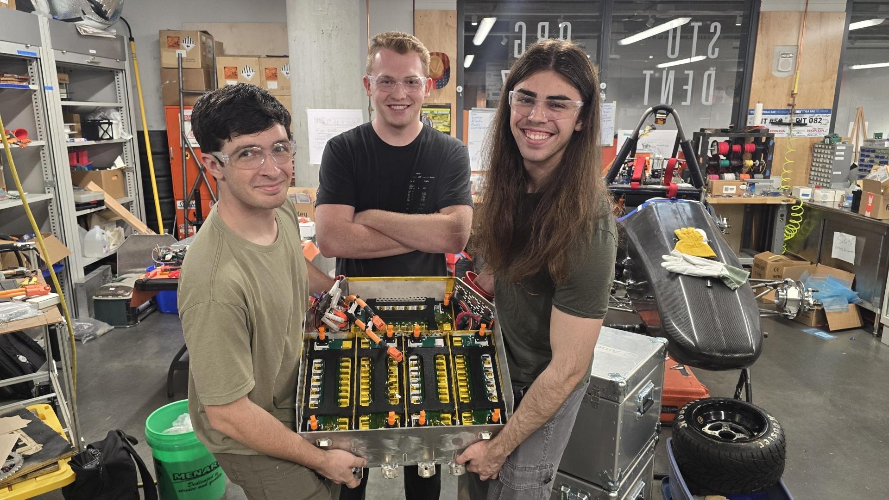
The completed CR30 Pack! Mostly...
Project Timeline
September 2025
Milestone 1: Design Phase
November 2025
Milestone 2: Manufacturing Begins
February 2026
Milestone 3: Modules and Housing Complete
March 2026
Milestone 4: Commissioning Begins
April 2026
Milestone 5: First Drive
Locked the pack-level design changes off CR29: PAHT-CF module basket, cantilever tab block retention, and self-jigging slots on the aluminum housing. Design phase closed November 1.
Began manufacturing. Took ownership of the full pack build: modules, the aluminum housing, HV integration, and chassis mount fit-up.
Finished five-module assembly and the welded aluminum housing. Caught the missed corner slots after weld-up, triggering the HV distribution sleeve redesign to fit the reduced corner volume.
Pack integration wrapped and commissioning underway. First drive was targeted for March 1, but electrical subsystem revisions and car-level debug pushed the date back.
First drive on April 26. The pack drove at a 40 kW cap with no battery faults; the day ended on a low-SoC trip traced to one mismatched replacement cell.
Maximus Anderson
mnra@iastate.edu
I'm a mechanical engineering student who excels in designing and manufacturing battery packs and electric race cars... that hopefully won't blow up.